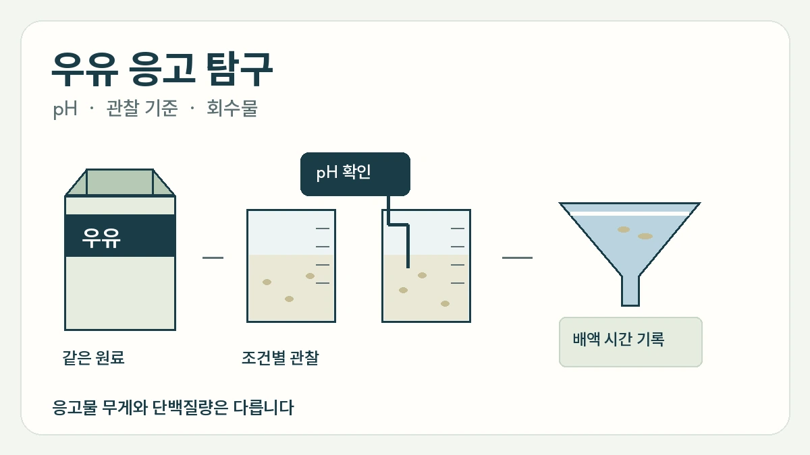

고1 식품공학 탐구: 우유 카제인 실험, pH와 응고를 무엇으로 비교할까?
식초 첨가량보다 실제 pH와 측정 기준부터
목차
- 식품공학과 연결하는 질문은 ‘무엇을 분리하는가’입니다
- 식초 양 비교와 pH 비교를 구분하세요
- 눈으로 볼지, 질량을 잴지 먼저 정합니다
- 기록표와 가상 계산 예시
- 예상과 다르면 실험 조건부터 고칩니다
- 안전과 실행 가능성을 먼저 확인하세요
- 제출할 한 문단과 다음 탐구
핵심 요약
- 식초 첨가량과 실제 pH를 구분합니다
- 총부피·대기·배액 절차를 맞추고 독립 시료를 기록합니다
- 젖은 응고물 질량은 단백질 함량이 아닙니다

우유에 산을 넣어 생기는 덩어리를 관찰하는 활동은 식품공학 탐구로 연결할 수 있습니다. 다만 ‘카제인을 만들었다’에서 끝내면 시연에 가깝습니다. 같은 우유에서 pH 조건을 달리했을 때 무엇을 어떻게 비교할지 정하고, 얻은 덩어리의 질량을 곧바로 단백질 함량이라고 부르지 않는 데서 탐구가 시작됩니다.
이 글은 고1 학생이 담당 교사와 검토할 수 있는 설계 예시입니다. 아래 pH 목표와 반복 수는 편집팀이 제안하는 계획이며, 실제 실험 결과나 검증된 최적 제조 조건이 아닙니다. 재료와 기기 사용 승인을 받기 전에는 실험하지 않습니다.
1. 식품공학과 연결하는 질문은 ‘무엇을 분리하는가’입니다
우유에는 카제인과 유청 단백질이 있습니다. Sindayikengera와 Xia의 논문은 서론에서 카제인의 산 침전을 pH 4.6에서 설명하고, 같은 조건에서 유청 단백질은 용액에 남는다고 정리합니다.[6] 이 설명은 출발점이지, 학교에서 거른 덩어리가 순수 카제인이라는 확인서는 아닙니다.
식품공학 연결은 ‘이 실험이 진로에 좋다’는 말보다 조건 설정, 분리, 측정 기준, 재현성을 설명하는 방식으로 드러낼 수 있습니다. 같은 원료에서 회수되는 응고물의 상태가 달라진다면 어떤 공정 조건과 측정 절차를 먼저 점검할지 질문해 보세요. 산업용 치즈의 최적 수율이나 맛, 영양을 평가하는 탐구와는 범위가 다릅니다.
넓은 주제: pH 변화에 따른 우유 속 카제인의 응고 특성
좁힌 질문: 같은 제품·같은 양의 우유를 사용하고 첨가 후 pH를 달리했을 때, 정해진 대기 시간 뒤 응고물의 관찰 등급은 어떻게 달라지는가?
추가 질문: 여과·배액 시간을 통일해도 젖은 응고물의 질량 비교에는 어떤 한계가 남는가?
2. 식초 양 비교와 pH 비교를 구분하세요
식초 1숟가락과 2숟가락을 넣은 실험은 일차적으로 ‘첨가량 비교’입니다. 실제 pH를 측정하지 않았다면 pH에 따른 변화라고 제목을 붙이지 않습니다. 우유의 양과 제품, 식초의 표시 산도도 기록해야 같은 첨가량이 무엇을 뜻하는지 알 수 있습니다.
- 바꾸는 조건: 첨가 후 실제로 확인한 pH. 예비 측정에서 원래 우유와 pH 약 5.2, 약 4.6 조건을 비교할 수 있는지 검토합니다. 목표값에 도달하지 못했다면 실제값을 쓰고, 강산으로 억지로 맞추지 않습니다.
- 고정할 조건: 같은 용기의 우유 제품·제조 묶음, 처음 취한 우유량, 첨가 후 총부피, 식초 제품, 용기, 섞는 방법, 대기 시간, 여과 도구와 배액 시간.
- 확인할 조건: 시작·종료 온도, 첨가 직후와 대기 후 pH, 기기의 표시 단위와 교정 기록. 같은 방에서 했다는 사실만으로 온도가 완전히 같았다고 쓰지 않습니다.
- 반복 단위: 조건마다 새로 준비한 컵 3개를 계획합니다. 한 컵의 pH를 세 번 읽는 것은 독립 시료 3개가 아닙니다.
총부피를 맞추려면 식초와 물의 첨가량을 함께 설계해야 합니다. 예를 들어 컵마다 우유 30mL를 취하고 첨가 후 40mL로 맞추는 방식이 가능한지 먼저 검토합니다. 물로 부피를 맞춘 뒤에도 pH를 다시 읽어야 합니다. 원래 우유 조건에도 같은 최종 희석 비율을 적용하고, 희석하지 않은 우유는 별도의 참고 시료로 구분하세요. 이 수치는 실행을 지시하는 표준 조리법이 아니라 비교 조건을 맞추는 연습입니다.
3. 눈으로 볼지, 질량을 잴지 먼저 정합니다
처음에는 관찰 기준을 통일하는 편이 낫습니다. 예를 들어 ‘덩어리가 보이지 않음 / 작은 알갱이가 보임 / 덩어리와 액체의 분리가 뚜렷함’으로 세 등급을 정하고, 같은 조명·배경·거리에서 사진을 남길 수 있습니다. 이 등급은 이 글의 교육용 기준입니다. 단백질 농도나 응고 속도를 직접 측정하는 단위가 아닙니다.
- 예비 측정으로 목표 pH에 접근할 수 있는지, pH 기기가 우유 시료에 사용 가능한지 확인합니다. 제조사 사용·교정·세척 안내를 따릅니다. 색 시험지만으로 우유의 불투명한 색과 작은 pH 차이를 구분하기 어렵다면 ‘정확히 4.6’이라고 보고하지 않습니다.
- 본 실험 전에 섞는 횟수와 대기 시간을 정합니다. 예를 들어 대기 10분을 선택했다면 모든 시료에 같은 기준을 쓰고, 시료별 처리 시작·종료 시각을 기록합니다. 10분은 최적 시간으로 검증된 값이 아닙니다.
- 독립 시료마다 실제 pH, 온도, 관찰 등급을 기록합니다. 예상과 다른 컵도 제외하지 말고, 누출·기기 오류처럼 확인 가능한 문제가 있었는지 별도 메모합니다.
- 여과를 추가한다면 같은 규격의 도구, 배액 시간, 누르거나 짜는 행동의 유무를 통일합니다. 배액이 끝났다는 판단이 사람마다 다르면 질량 차이와 처리 차이를 분리하기 어렵습니다.
질량은 반드시 측정 대상을 이름에 넣으세요. ‘카제인 수율’ 대신 ‘정한 여과·배액 절차 후의 젖은 응고물 질량’이라고 씁니다. 거름종이가 젖은 채로 함께 측정됐다면 여과지에 남은 물도 차이에 들어갈 수 있습니다. 빈 여과지의 같은 처리 기록이나 건조 방법을 검토하지 않았다면 순수 단백질량을 정량했다고 주장하지 않습니다.
4. 기록표와 가상 계산 예시
기록표는 다음 항목으로 시작할 수 있습니다. 시료 번호 / 실제 pH / 우유량 / 식초·물 첨가량 / 총부피 / 시작·종료 온도 / 대기 시간 / 관찰 등급 / 여과·배액 시간 / 질량 측정 대상 / 원자료 / 특이사항. 빈칸을 미리 만들면 실험 후 기억으로 조건을 채우는 일을 줄일 수 있습니다.
아래는 계산을 보여 주기 위해 만든 가상 값입니다. 실제 pH별 결과나 예상되는 수율이 아닙니다. 두 조건 A와 B에서 정한 절차 후 젖은 응고물 질량을 각각 1.1·1.3·1.2g, 2.4·2.7·2.5g으로 적었다고 가정합니다.
- A 평균: (1.1 + 1.3 + 1.2) ÷ 3 = 1.20g, 최솟값에서 최댓값까지 1.1~1.3g.
- B 평균: (2.4 + 2.7 + 2.5) ÷ 3 ≈ 2.53g, 최솟값에서 최댓값까지 2.4~2.7g.
- 가상 평균 차이는 약 1.33g입니다. 이것은 젖은 회수물의 질량 차이이며, 카제인 단백질이 1.33g 더 생성됐다는 뜻이 아닙니다.
평균과 함께 각 컵의 원자료를 제시합니다. 세 컵의 차이만으로 통계적 유의성을 주장하거나, 실험하지 않은 pH 구간까지 매끈한 최적 곡선으로 그리지 않습니다. 그래프를 쓴다면 가로축에 실제 pH, 세로축에 실제로 잰 지표와 단위를 적고 원자료 점을 남기세요.
5. 예상과 다르면 실험 조건부터 고칩니다
교육용 상황을 하나 가정해 보겠습니다. 어떤 조건의 덩어리가 더 무거웠지만, 그 컵만 배액을 짧게 끝냈습니다. 이때 ‘그 pH에서 응고가 더 잘됐다’고 결론 내리지 않습니다. 먼저 배액 절차 차이 때문에 남은 수분의 영향을 분리할 수 없다고 기록하고, 같은 시간·같은 도구로 비교할 계획을 세웁니다. 다시 하지 않았다면 수정 실험 결과는 아직 없습니다.
수정 전: pH가 낮을수록 카제인이 많이 만들어져 식품의 단백질 함량이 높아졌다.
수정 후: 이번 조건에서 비교한 것은 정한 대기 시간 뒤의 관찰 등급과 젖은 회수물 질량이다. 잔류 수분과 여과 손실, 회수물의 조성을 따로 측정하지 않아 단백질 함량이나 영양의 차이로 해석하지 않았다.
제품도 섞지 않는 편이 좋습니다. Caroli 등의 연구는 초고온 처리 우유에서 유청 단백질인 β-락토글로불린이 카제인과 복합체를 이룰 수 있어, 침전만으로 유청 단백질을 분리하기 어려운 문제를 설명합니다.[5] 따라서 일반 살균 우유와 멸균 우유를 동시에 비교하면 pH 외에 가열 이력도 달라집니다. 제품 비교는 이번 설계를 마친 뒤 별도 질문으로 남기세요. 해당 논문의 전문 시약·전기영동 절차는 이 학교 탐구에서 따라 하지 않습니다.
6. 안전과 실행 가능성을 먼저 확인하세요
이 글이 제안하는 범위는 교사가 승인한 신선한 시판 우유와 식용 식초, 물을 사용하는 소규모 관찰입니다. 가열, 농축 산·염기, 단백질 분석용 시약, 미생물 배양, 맛보기는 포함하지 않습니다. 논문에 등장하는 염산·수산화나트륨·트라이클로로아세트산 등의 조건을 가정용 실험으로 옮기지 마세요. 보호구와 실험실 취급·폐기 절차는 담당 교사와 학교 지침을 따릅니다.
우유 알레르기 등 취급 제한이 있는 학생은 직접 다루지 않고 문헌·설계 검토로 역할을 바꿉니다. 시료를 먹거나 오래 실온에 두고 변화를 기다리는 실험으로 바꾸지 않습니다. 정확한 pH 측정이나 조건 통일이 불가능하다면 ‘관찰 시연과 설계 한계 분석’으로 범위를 줄이고 제목도 그에 맞게 고칩니다. 하지 않은 정밀 실험을 보고서에 채워 넣을 이유는 없습니다.
7. 제출할 한 문단과 다음 탐구
아직 수행 전이라면 다음처럼 계획으로 씁니다. 아래 문장은 실제 학생 활동이 아니라 편집팀의 작성 연습입니다.
우유 응고 관찰을 식품 분리 공정의 조건 설정 문제로 좁혔다. 같은 제품의 우유에서 첨가 후 pH를 확인하고, 총부피와 대기·배액 절차를 통일해 독립 시료별 관찰 등급을 비교할 계획이다. 젖은 회수물 질량을 단백질 함량과 구분하고, 기기 사용 가능성과 학교 안전 기준을 담당 교사와 먼저 확인하려 한다.
실행 후에는 계획을 그대로 과거형으로 바꾸지 말고 실제 사용한 조건, 확보한 기록, 바꾼 절차와 남은 한계를 넣습니다. 후속 질문은 ‘제품별 최적 pH’처럼 바로 크게 넓히기보다 ‘배액 시간이 회수물 질량 비교에 주는 영향’처럼 이번 측정의 약점을 확인하는 쪽으로 잡을 수 있습니다.
보고서 전체 구성은 탐구보고서 대표 작성 가이드, 결과의 해석 범위는 과학 탐구의 오차와 한계 쓰는 법, 다른 실험과의 비교는 과목별 탐구보고서 예시를 참고하세요. 이 글은 그중 우유의 산 응고를 무엇으로 비교하고 어디까지 해석할지에 집중합니다.
자료 확인일: 2026-11-27. 아래 원논문의 카제인 산 침전 설명과 열처리 우유의 분리 한계를 확인했습니다. 논문의 영양·건강 효과를 이 교육용 관찰의 결론으로 사용하지 않았습니다. 학교에서 이 설계를 실제 수행해 재현성을 확인한 것은 아니며, pH 목표·부피·대기 시간·가상 수치는 이 글이 제안한 교육용 계획입니다.
- [5] Caroli et al. (2016), Detecting β-Casein Variation in Bovine Milk
- [6] Nutritional evaluation of caseins and whey proteins and their hydrolysates from Protamex
관련 글

물리·화학·생명과학·통합과학 탐구보고서 예시: 과목별 측정 질문과 안전한 설계NEW
물리(스마트폰 센서 진자), 화학(생활 속 반응 주제 8선과 안전 기준), 생명과학(발아 조건 비교), 통합과학(기후·에너지 공개 자료) 탐구보고서를 가상 자료로 끝까지 따라가며 측정 기준·계산·결과 문장을 보여 줍니다.
과학 과목 탐구보고서에서 오차와 한계 쓰는 법NEW
과학 보고서의 오차와 한계는 실패 고백이 아니라 탐구의 신뢰도를 높이는 설명입니다.

탐구보고서 쓰는 법: 형식 6요소와 서론·본론·결론 실제 예시NEW
탐구보고서의 기본 구조 6요소와 작성 순서, 한 가지 가상 예시로 완성하는 서론·본론·결론 문장, 하루 30분씩 5일 작성 계획과 수정 기록 방법을 정리한 대표 작성 가이드입니다.
이 글은 일반 교육 정보이며 특정 대학 합격·학생부 평가·면접 결과를 보장하지 않습니다. 학교와 대학의 공식 안내를 함께 확인해 주세요.